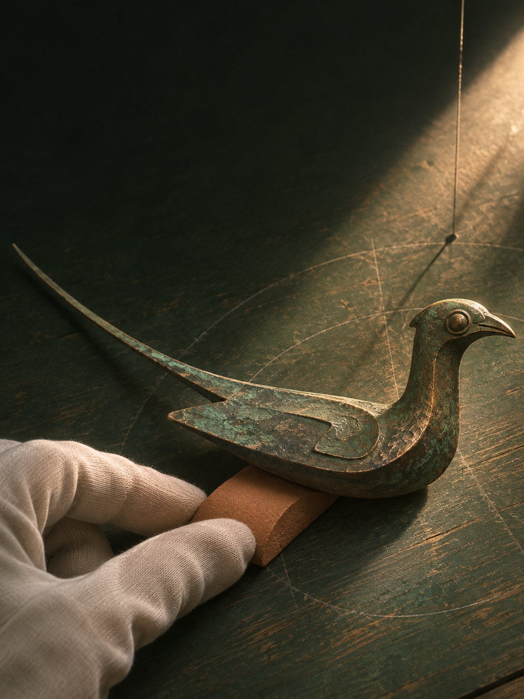
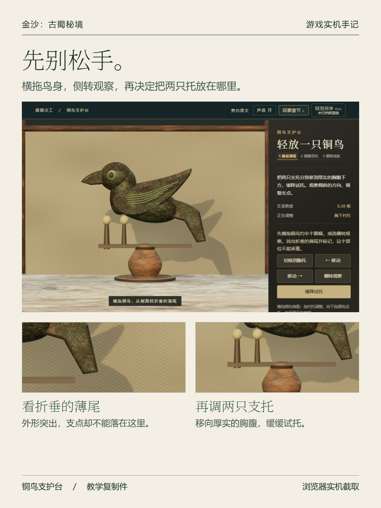
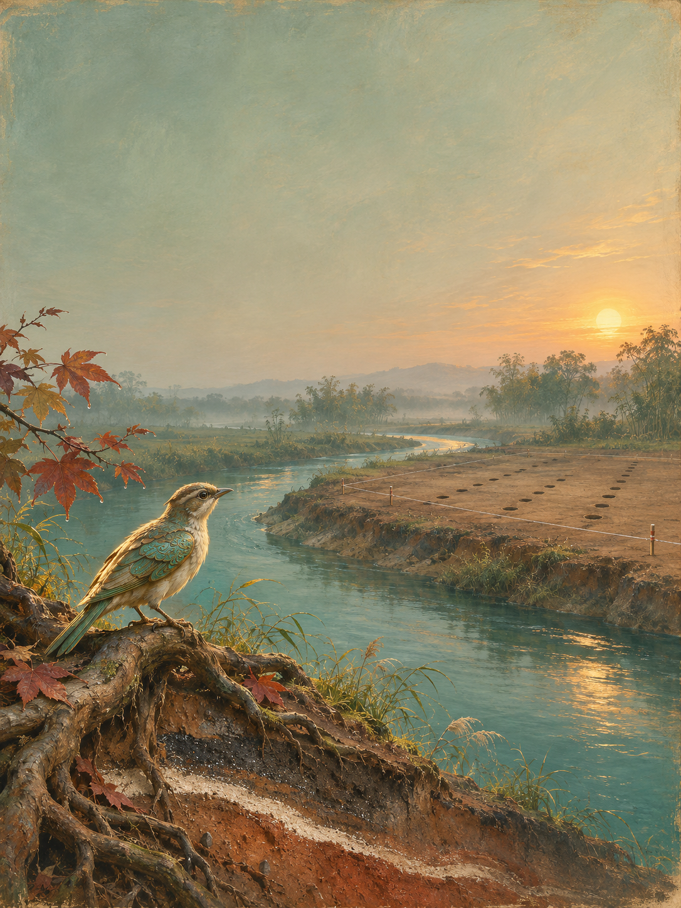
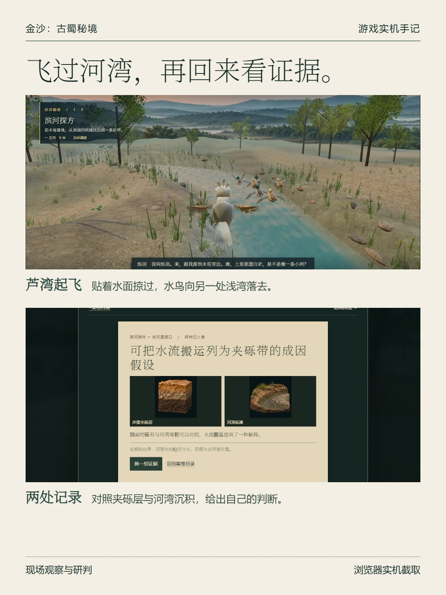

要把一只薄尾铜鸟轻轻放下，你会把支托移到哪里？这款浏览器游戏从九处田野现场出发，让玩家亲手处理支护、取样、摄影和测绘。
44 秒实机预告 · 普通话双角色配音
支护概念图把视线引向薄尾和手指。到了工作台，玩家可以侧转鸟身、移动支托、试着落托，让同一个问题交给双手来回答。


玩家跟随烁羽经过河湾，拿到观察记录，再回到手册比较两份证据。河岸景观与羽灵属于游戏创作，遗存资料及美术、声音来源可在游戏中查阅。


这件作品把考古资料整理、交互脚本、三维网页、AI 辅助美术与配音、实机剪辑串成了一次可玩的体验。若有地方文化、展览或教育项目，可在作品发布账号内联系，先聊访客能亲手完成的一个动作。